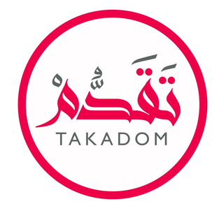
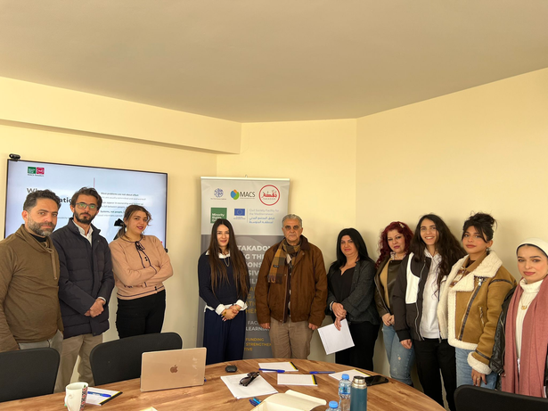
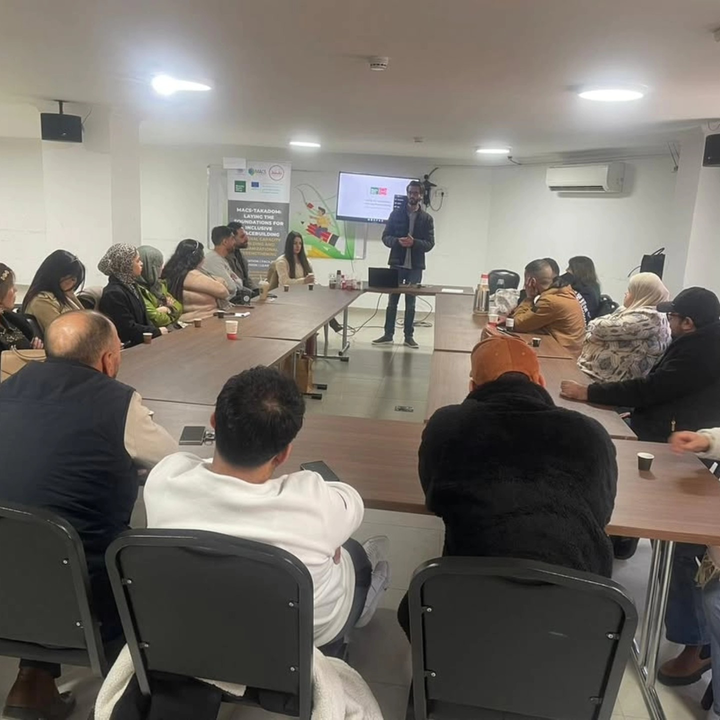

Mission
To contribute to a just and comprehensive peace by empowering Palestinian women and youth through leadership development, advocacy, dialogue, civic participation, resilience-building and community action.

Takadom for Peace works to strengthen Palestinian women, youth and communities through leadership, participation, resilience and dialogue.
Takadom for Peace is committed to empowering Palestinian women and youth and strengthening resilient, inclusive communities.
Our work connects leadership development, advocacy, civic participation, psychosocial support, community resilience, economic empowerment and dialogue. From grassroots workshops to international forums, we create opportunities for Palestinian voices to be heard and for local leadership to grow.

To contribute to a just and comprehensive peace by empowering Palestinian women and youth through leadership development, advocacy, dialogue, civic participation, resilience-building and community action.
A peaceful, just and inclusive society where women, youth and communities have the voice, resilience and opportunity to shape their future.
Inclusion, dignity, participation, equality, dialogue, resilience, local leadership and collaboration.

Takadom has invested in its internal infrastructure, staff capacity, communication systems and organizational frameworks to make its peacebuilding work more sustainable and effective.